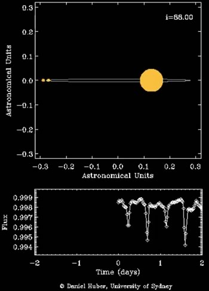
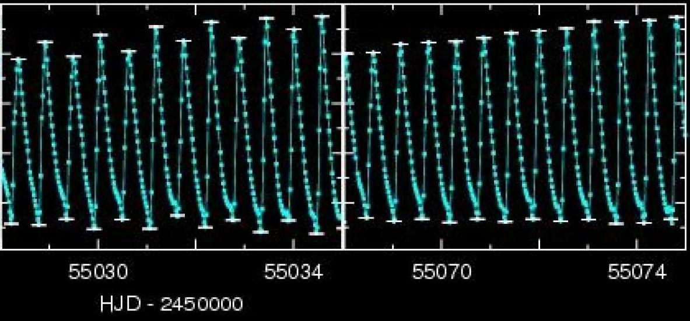

Where to find moons with surface water?
Not only planets, but also moons can host life as we know it, if water is present on the surface. We wanted to know the possible orbits for satellites where the surface temperature may be suitable for liquid water. For the calculations we considered stellar radiation, tidal heating, reflected light from the planet and thermal radiation of the planet. In the circumstellar habitable zone an Earth-like moon can be just as habitable as planets, given that it's orbit is not too close to the host planet. In close-in orbits tidal heating will heat up the moon so severely that the surface water will evaporate, and UV photons in the atmosphere will break up water molecules to hydrogen and oxigen, and hydrogen can easily escape to space. It means that water molecules will not be able to form again due to the lack of hydrogen. Strong tidal heating therefore will help in reaching favourable surface temperature only if the planet-moon pair orbits the star in a larger distance where stellar radiation is weaker. We mapped this change for some representative cases of different stellar and satellite masses.
Dobos et al. 2017, A&A 601, A91

Bottom: circumplanetary habitable zone as functions of the stellar (axis x) and planetary (axis y) distances. In this example the star is Solar-like, the planet is Jupiter-like and the moon is Earth-like. The orange coloured area indicates those cases where tidal heating is especially strong and geological activity may be extreme. Top: the graphic shows that the circumplanetary habitable zone (blue ring) is closer to the planet and becomes thinner for larger stellar distances.
Possibility of albedo estimation of icy exomoons
Ice covered moons are the most actively studied ones in the Solar System in connection with the possibility of life. We proposed a method for albedo estimation of icy exomoons with next generation missions, or in other words, the possibility of selecting icy moons with the use of photometric measurements during the occultation of the moons. We showed that the moon occultation cannot be detected for Solar-like host stars, but red dwarfs are better candidates. M dwarfs emit the majority of their radiation in the near infrared wavelengths, where ice is still very reflective (however, not as reflective as in the visible range), hence the J photometric band is the most promising to observe the occultation of icy moons. By estimating the photon noise of next generation missions, we concluded that the albedo estimation is far too challenging, even in the case of icy moons with larger sizes than that of the Earth. This method, however, can be applied in the future, upon the instrumentation is available for better precisions.
Dobos et al. 2016, A&A 592, A139
The occultation light curves of the planet and the moon overlap in the case of Solar-like stars (panel `a'), but for red dwarfs, because of the smaller stellar size, the occultations are separated in most cases (panel `b').
Rapidly rotating star with a strange companion

An artist's concept of KOI-13. A brown dwarf orbits one of the gravitationally bound rapidly rotating subgiant stars.
Rapidly rotating stars have an oblate shape and their pole is hotter than their equator. Planets or substellar objects with an oblique orbit transiting such stars would exhibit characteristic light curve deformations. We identified the first such object in the public Kepler data. KOI-13 consists of two stars, both being more massive than our Sun, and we showed that the transit belongs to the brighter component. The object with the inclined orbit that causes the transit is a brown dwarf, being a borderline object between planets and stars. The system is unique by all means: we haven't seen a companion around such a hot star yet, in addition it is by all likelihood a hot brown dwarf - an object never seen before. It is the first time that the obliqueness of the small component's orbit relative to the rotational axis of the main component could be measured using only the precise photometric measurements. This quantity is a tracer of the planet formation and migration processes. The unique triple configuration also carries information on the validity of stellar formation theories of low and medium mass stars.
Szabó M. Gy. et al. 2011, ApJ, 736, L4

Deformations in the light curve of a substellar object transiting a rapidly rotating star.
Discovery of a triply eclipsing triple stellar system
We have discovered a unique triplet of stars, HD 181068 (magnitude of 7.1) in the Kepler data, which we dubbed 'Trinity'. We obtained 218 days of Kepler photometry supplemented by ground-based spectroscopy and interferometry, which show it to be a hierarchical triple with two types of mutual eclipses. The primary is a red giant that is in a 45-day orbit with a pair of red dwarfs in a close 0.9-day orbit. The red giant shows evidence for tidally induced oscillations that are driven by the orbital motion of the close pair. Hierarchical triple systems comprise a close binary and a more distant component. They are important for testing theories of star formation and of stellar evolution in the presence of nearby companions. HD 181068 is an ideal target for studies of dynamical evolution and testing tidal friction theories in hierarchical triple systems. See also the press release.
Derekas et al. 2011, Science, 332, 216

The three components of HD 181068 drawn to scale. The radius of the red giant star (A) is 12.4 times larger than the solar radius, while the B and C components are dwarf stars, each smaller than our Sun.
Credit: D. Huber (Univ. of Sydney)

Animation of HD 181068 system and light curve. Click on image to play animation. Credit: D. Huber (Univ. of Sydney)
Discovery of period doubling in RR Lyrae stars
One of our most recent achievements is the discovery of period doubling in Kepler RR Lyrae stars, one of them is RR Lyr itself, the eponym and prototype of its class. This is the first time that this dynamical phenomenon was observed in RR Lyrae stars. The period doubling manifests itself as alternating maxima and minima of the pulsational cycles in the light curve, as well as through the appearance of half-integer frequencies located halfway between the main pulsation period and its harmonics in the frequency spectrum. Interestingly, all these pulsating stars are Blazhko modulated. The effect was found to be stronger during certain phases of the modulation cycle. These findings point to a strong connection between the period doubling and the mysterious Blazhko effect and we argue that it may give us fresh insights to solve the century-old Blazhko enigma. These results were discussed in detail at the NASA-KASC press conference held at Aarhus, Denmark in 2010 October 26 (press release).
Kolenberg et al. 2010, ApJL, 713, 198
Szabó et al. 2010, MNRAS, 409, 1244

Period doubling in RR Lyrae. 127-day long Kepler light curve of RR Lyrae is shown. The individual pulsational cycles are hard to see, but the Blazhko-modulation with a ~40-day period is evident. The period doubling is strongest at specific phases of the first two modulation cycles, but during the third cycle period doubling is not seen. The two highlighted red sections are blown up in the next figure.

Period doubling. Two sections of the Kepler light curve of RR Lyr at the same phase of the Blazhko-modulation. In both cases the amplitude of the pulsation is increasing because of the Blazhko modulation. However, in the left panel period doubling is striking, while in the right panel it is not present. The cause of this discrepancy is currently unknown.
Hydrodynamical modeling of period doubling
The best thing was yet to come. We were able to reproduce the period doubling bifurcation in our non-linear RR Lyrae models computed by the Florida-Budapest hydrocode. This enabled us to trace the origin of this instability in RR Lyrae stars to a 9:2 resonance between the fundamental pulsational mode and a high-order (ninth) radial overtone showing strange mode characteristics. The resonance was found to be surprisingly strong, yet these resonances were neglected in previous theoretical studies. Our investigations suggest that a complex interplay of radial (and presumably non-radial) modes can take place in RR Lyrae stars that might have connections with the Blazhko-effect as well.
Kolláth, Molnár, Szabó 2011, MNRAS, in press
Blazhko zoo of Kepler RR Lyrae stars
We analyzed Kepler observations of 29 RR Lyrae stars. 14 of the stars exhibit both amplitude and phase Blazhko modulations, with Blazhko periods ranging from 28 to longer than 200 days. The unprecedented precision of the Kepler photometry has led to the discovery of the the smallest modulations detected so far. Moreover, additional frequencies beyond the well-known harmonics and Blazhko multiplets have been found. In four stars, these frequencies are close to the first and/or second overtone modes. The amplitudes of these periodicities seem to vary over the Blazhko cycle. V350 Lyr, a non-Blazhko star in our sample, is the first example of a double-mode RR Lyrae star that pulsates in its fundamental and second overtone modes.
Benkő et al., 2010, MNRAS, 409, 1585
Blazhko RR Lyrae stars in the Kepler field. Great variety of light curve modulation period, strength and shape is seen in this sample. However, the origin of the modulation is still unknown.
Kepler field Cepheids
Prior to the launch of the Kepler space telescope we selected 40 candidate Cepheids from previous surveys and databases in the Kepler field of view. We analyzed the first 322 days of Kepler photometry of these candidates, and initiated ground-based follow-up spectroscopic and multicolour photometric campaigns. These data together allowed us to confirm that one of these stars, V1154 Cyg, is indeed a Cepheid with a period of 4.9 days. Using the phase lag method we showed that this star pulsates in the fundamental mode. The new radial velocity data are consistent with previous measurements, suggesting that a long-period binary component is unlikely. No evidence is seen in the ultra-precise, nearly uninterrupted Kepler photometry for nonradial or stochastically excited modes at the micromagnitude level. The other candidates are not Cepheids but an interesting mix of possible spotted stars, eclipsing systems, flare and other variable stars.
Szabó et al., 2011, MNRAS, 413, 2709

Light variation of V1154 Cygni. The only known Cepheid in the Kepler field was observed with a 1-minute cadence for 33.5 days.